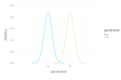
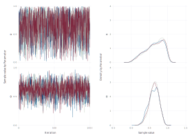

TuringPlots
After training a Turing model, we end up with a chain such as
chnChains MCMC chain (1000×14×3 Array{Float64, 3}):
Iterations = 1:1000
Thinning interval = 1
Chains = 1, 2, 3
Samples per chain = 1000
parameters = α, θ
internals = acceptance_rate, hamiltonian_energy, hamiltonian_energy_error, is_accept, log_density, lp, max_hamiltonian_energy_error, n_steps, nom_step_size, numerical_error, step_size, tree_depth
Summary Statistics
parameters mean std naive_se mcse ess rhat
Symbol Float64 Float64 Float64 Float64 Float64 Float64
α 0.6304 0.2489 0.0045 0.0054 2456.5999 1.0011
θ 0.6246 0.1407 0.0026 0.0025 2529.4387 0.9995
Quantiles
parameters 2.5% 25.0% 50.0% 75.0% 97.5%
Symbol Float64 Float64 Float64 Float64 Float64
α 0.1281 0.4439 0.6655 0.8502 0.9840
θ 0.3334 0.5318 0.6291 0.7252 0.8744
This package extends Gadfly.plot for MCMCChains.Chains. Therefore, we can pass Gadfly elements, such as, Geom.density:
using Gadfly
using TuringPlots
plot(chn, x = :θ, Geom.density, Guide.ylabel("Density"))
It is also possible to plot a summary for the parameters:
plot_summary(chn, style(line_width=2mm))